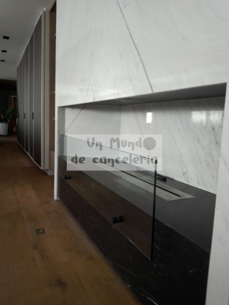
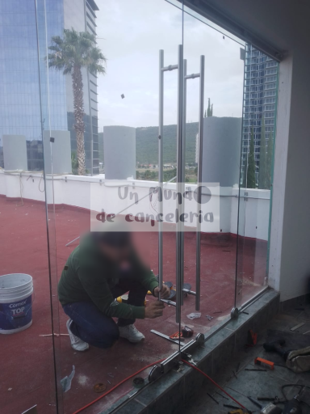

Expertos en Vidrios y Aluminios en Ciudad de México
¡Líderes en servicios de vidrios y aluminios en la Ciudad de México! Soluciones personalizadas con la más alta calidad para hogares, oficinas y comercios.
Servicios de Vidrios y Aluminios en Ciudad de México
Instalación de Ventanas
Diseño e instalación de ventanas de vidrios y aluminios en la Ciudad de México. Ofrecemos acabados modernos y funcionales.
Cristales Templados
Fabricamos e instalamos cristales templados para proyectos residenciales y comerciales en toda la Ciudad de México.
Estructuras de Aluminio
Soluciones en aluminio para puertas, fachadas y estructuras arquitectónicas. Calidad garantizada en la Ciudad de México.
¿Por qué elegirnos en Ciudad de México?
Más de 10 años de experiencia en vidrios y aluminios.
Atención en todas las alcaldías de la Ciudad de México.
Precios competitivos y garantía en todos nuestros servicios.
Equipo especializado en proyectos a medida.
Nuestro compromiso es ofrecerte los mejores resultados en vidrios y aluminios en Ciudad de México, con un enfoque en calidad, diseño y funcionalidad.
Opiniones de Nuestros Clientes en Ciudad de México
"El servicio de instalación de ventanas fue excelente. Todo el trabajo quedó perfecto. ¡Los mejores en vidrios y aluminios en Ciudad de México!"
"Excelente atención al cliente y materiales de alta calidad. Los recomiendo al 100% en toda la Ciudad de México."
Ubicación y Contacto
Estamos ubicados estratégicamente para atender a toda la Ciudad de México. Contáctanos para cotizaciones sin compromiso.
En Un Mundo de Cancelería, transformamos tus espacios con soluciones de vidrio de alta calidad, cancelería moderna y productos de vidrio templado. Mejora tu hogar y oficina con nuestros cristales y ventanales a medida.
Nuestros Productos

Puertas de Vidrio para Hogar: Eleva tu Espacio con Elegancia Moderna
Descubre la sofisticación y modernidad que ofrecen nuestras exclusivas puertas de vidrio diseñadas tanto para hogares como para oficinas.
Explorando la Elegancia Moderna
Sumérgete en un mundo de diseño contemporáneo con nuestras puertas de vidrio para hogar. Ofrecemos una amplia gama de estilos, desde minimalistas hasta extravagantes, para adaptarse a tu gusto personal y mejorar la estética de tu espacio.
Características Destacadas
Nuestras puertas de vidrio destacan por su calidad y funcionalidad:
Transparencia Elegante: Aporta luminosidad y amplitud a tus espacios.
Variedad de Estilos: Encuentra la puerta que complemente tu decoración.
Durabilidad: Fabricadas con materiales de alta calidad para garantizar resistencia y durabilidad.
Transforma tu Espacio
Imagina la transformación que nuestras puertas de vidrio pueden brindar a tu hogar u oficina. Desde salones hasta despachos, estas puertas no solo son elementos funcionales, sino también piezas clave para una decoración de vanguardia.
Explora Nuestra Colección Completa
Visita nuestra sección de puertas de vidrio para descubrir la variedad de opciones disponibles. Desde puertas correderas hasta diseños personalizados, estamos seguros de que encontrarás la opción perfecta para tus necesidades.
En Nuestra Empresa, nos comprometemos a ofrecer productos de calidad que satisfagan tus expectativas de diseño y funcionalidad. ¡Eleva tu espacio con nuestras puertas de vidrio para hogar!
Canceles de Baño en Vidrio Templado
Añade estilo y funcionalidad a tu baño con nuestros exclusivos cancel de baño en vidrio templado.
Cancel Max Format
Descubre la máxima elegancia con nuestros exclusivos cancel en formato amplio.
Cancel Perimetral de Vidrio
Define tus espacios con estilo utilizando nuestros cancel perimetrales de vidrio.
Cancel Domo de Vidrio
Agrega un toque moderno a tus espacios con nuestros cancel tipo domo de vidrio.
Cancel Max Format - Otra Variante
Explora otra variante de nuestro exclusivo cancel en formato amplio con estilo único.

Cancel de Puertas de Vidrio
Embellece tus entradas con nuestros elegantes cancel de puertas de vidrio.
Cancel para Oficina en Vidrio
Optimiza tus espacios de trabajo con nuestros exclusivos cancel de vidrio para oficinas.
Cancel para Terraza en Vidrio
Disfruta de tu terraza con estilo utilizando nuestros cancel de vidrio diseñados para exteriores.
Cancel Moderno de Vidrio
Transforma tus espacios con nuestro innovador cancel moderno de vidrio, perfecto para ambientes contemporáneos.
Cancel Clásico de Aluminio y Vidrio
Añade un toque atemporal a tus interiores con nuestro elegante cancel clásico, fusionando aluminio y vidrio de manera única.
Cancel Residencial de Alta Seguridad
Protege tu hogar con estilo gracias a nuestro cancel residencial diseñado con materiales de alta seguridad para tu tranquilidad.
Cancel para Ventanas Panorámicas
Disfruta de vistas impresionantes con nuestro cancel diseñado especialmente para ventanas panorámicas, combinando estética y funcionalidad.
Cancel de Aluminio Inoxidable
Añade un toque de modernidad y resistencia con nuestro exclusivo cancel de aluminio inoxidable, ideal para espacios comerciales y residenciales.
Cancel Corredizo de Vidrio
Optimiza tu espacio con nuestro versátil cancel corredizo de vidrio, perfecto para crear ambientes abiertos y funcionales.
Cancel con Persiana Integrada
Añade privacidad y control de luz a tus espacios con nuestro innovador cancel que incorpora una persiana integrada, combinando estilo y practicidad.
Cancel Artístico Personalizado
Transforma tu espacio en una obra de arte con nuestro cancel artístico personalizado, diseñado según tus preferencias y estilo único.
Cancel de Seguridad para Comercios
Protege tu negocio con nuestro resistente cancel de seguridad, ofreciendo tranquilidad y un toque de elegancia en tu establecimiento.
Cancel Rústico de Aluminio Forjado
Añade encanto rústico a tus espacios con nuestro cancel de aluminio forjado, aportando un toque vintage y durabilidad excepcional.
Nuestros Servicios
Ofrecemos una amplia gama de servicios para satisfacer tus necesidades de vidrio y cancelería. Desde instalaciones personalizadas hasta mantenimiento especializado.
Galería
Explora nuestra galería de proyectos realizados para inspirarte en la transformación de espacios con cristales y cancelería de alta calidad.
Contacto
Contáctanos para obtener información detallada sobre nuestros productos y servicios.
Cristales y Cancelería
Dirección: CDMX, 09220.
Teléfono: 55 2821 5430
Correo Electrónico: unmundodecanceleria@hotmail.com
esq. Manue Escandon, Prol. Plutarco Elías Calles 188, Chinam Pac de Juárez, Iztapalapa, 09208 Ciudad de México, CDMX
Servicios de cristales y cancelería en Ciudad de México y Estado de México
Servicios de cristales y cancelería cerca de ti
Empresas de vidrios y cancelería en tu ciudad
Instalación de ventanas de cristal en tu ubicación
Reparación de cristales y cancelería para hogares y negocios
Diseño personalizado de cancelería para espacios comerciales
Venta de cristales y materiales de cancelería de alta calidad
Mantenimiento preventivo para asegurar la durabilidad de tus cristales
Servicio rápido y eficiente para emergencias de cristales rotos
Asesoramiento en la selección de cristales para eficiencia energética
Presupuestos personalizados según tus necesidades y preferencias
Experiencia en proyectos de gran escala como edificios corporativos y residenciales
Variedad de opciones de cristales, desde transparentes hasta decorativos
Servicios de cristales y cancelería en otras áreas
Carpintería de aluminio y vidrio en tu ciudad
Puertas de vidrio y ventanas para hogares y negocios
Presupuesto personalizado para cristales y cancelería
Reparación y mantenimiento de ventanas de aluminio
Instalación de barandillas y pasamanos de cristal
Diseño y fabricación de espejos a medida
Proyectos de cerramientos de terrazas y balcones
Asesoramiento en la elección de cristales de seguridad
Soluciones de aislamiento acústico con cristales especializados
Servicio de instalación de mamparas y separadores de vidrio
Cristales decorativos para proyectos arquitectónicos
Modernización de fachadas con cristales innovadores
Servicio de emergencia para reparación de cristales
Explora la magia de un mundo lleno de cancel, donde cada estructura cuenta una historia de belleza única.
Los vidrios en este universo reflejan la luz de manera sublime, creando un juego de colores y sombras que enamora.
Los cristales se convierten en joyas arquitectónicas, aportando elegancia y sofisticación a cada rincón de este mundo estético.
En este fascinante lugar, la transparencia de los vidrios revela la verdadera esencia de la belleza y la estética.
Los diseños de cancel se entrelazan con la naturaleza, fusionando lo urbano con lo orgánico de una manera sublime y estética.
La arquitectura moderna abraza la versatilidad del vidrio, creando espacios que son a la vez funcionales y visualmente impactantes.
Los reflejos en los cristales dan vida a la arquitectura, transformando cada edificio en una obra maestra de estética contemporánea.
Descubre cómo el mundo del cancel y los vidrios se fusiona con la creatividad, dando lugar a expresiones artísticas únicas y emocionantes.
En este mundo estético, los cristales no solo son elementos decorativos, sino también portadores de historias y emociones.
La belleza en cada detalle: desde los sutiles grabados en el vidrio hasta la imponente presencia de los cristales en la arquitectura.
Explora las texturas y formas que ofrece el cancel, creando un paisaje visual que invita a la contemplación y el asombro.
Los vidrios translúcidos dan paso a la luz, iluminando cada rincón de este mundo y resaltando su belleza intrínseca.
Los diseñadores encuentran en el mundo del vidrio y el cancel un lienzo para expresar su creatividad y sensibilidad estética.
La fusión de lo clásico y lo moderno: un mundo donde la tradición del cancel se encuentra con la innovación de los vidrios contemporáneos.
La estética del cancel no solo está en su apariencia, sino en su capacidad para conectar espacios y personas de manera armoniosa.
Desde las fachadas de vidrio hasta los detalles más íntimos, cada elemento contribuye a la belleza global de este mundo estético.
Explora la simetría y la proporción en el diseño de cancel, creando una sensación de equilibrio y armonía en todo su esplendor.
La transparencia de los vidrios permite una conexión visual con el entorno, integrando la naturaleza en el corazón de la estética urbana.
Los cristales tallados a mano cuentan historias ancestrales, transmitiendo la herencia cultural a través de la pureza del vidrio.
La estética minimalista encuentra su máxima expresión en este mundo de cancel y vidrios, donde menos es más y la belleza esencial prevalece.
Desde las estructuras más imponentes hasta los detalles más delicados, cada elemento contribuye a la narrativa visual de este mundo estético.
Los juegos de luz y sombra en los vidrios crean una atmósfera única, transformando el espacio en un escenario de belleza en constante cambio.
La arquitectura con cancel y vidrios se convierte en una danza de líneas y formas, creando una coreografía visual que cautiva a quien la contempla.
La durabilidad y resistencia de los cristales se combinan con su delicadeza estética, revelando la dualidad única de este mundo de contrastes.
En este universo estético, cada ventana es una obra de arte, enmarcando paisajes que son dignos de ser contemplados como cuadros vivientes.
La fusión de lo funcional y lo estético en el diseño de cancel y vidrios redefine la manera en que experimentamos y percibimos el espacio arquitectónico.
Los reflejos y transparencias en los vidrios abren un portal a la imaginación, invitando a sumergirse en un mundo de belleza que trasciende lo convencional.
El mundo de cancel, vidrios y cristales es un lienzo en blanco para la creatividad, donde cada diseñador deja su huella única en la estética de este fascinante universo.
1. Estética Mejorada con Vidrio y Cristal
El uso de vidrio y cristal en el hogar proporciona un toque elegante y moderno. La transparencia de estos materiales permite la entrada de luz natural, creando un ambiente luminoso y acogedor.
2. Eficiencia Energética con Vidrio
Los ventanales de vidrio de doble o triple panel ayudan a mejorar la eficiencia energética del hogar al proporcionar un mejor aislamiento térmico. Esto contribuye a reducir los costos de calefacción y refrigeración.
3. Durabilidad y Resistencia del Aluminio
El aluminio es conocido por su durabilidad y resistencia a la corrosión, lo que lo convierte en un material ideal para puertas y ventanas. Además, el aluminio es ligero y fácil de mantener, proporcionando soluciones a largo plazo para el hogar.
4. Diseño Moderno con Aluminio
Las estructuras de aluminio permiten diseños más delgados y modernos, lo que brinda versatilidad en la creación de ventanas y puertas. Esto no solo mejora la estética, sino que también maximiza la entrada de luz natural.
Instalación de Vidrio y Cristal
Ofrecemos servicios de instalación de vidrio y cristal para ventanas, puertas, vitrinas, mesas y más. Utilizamos materiales de alta calidad como vidrio templado, cristal de seguridad, y aluminio para garantizar durabilidad y seguridad en todas nuestras instalaciones.
Vidrios templados
Puertas de cristal
Ventanas de cristal
Mesas de vidrio a medida
Vitrinas de vidrio personalizadas
Cristales para fachadas
Vidrio resistente para balcones
Instalación de cristales blindados
Vidrio para techos de vidrio
Instalación de ventanales de aluminio
Reparación y Mantenimiento
Ofrecemos servicios de reparación y mantenimiento para todo tipo de cancelería, ventanas y estructuras de vidrio y aluminio. Desde la reparación de puertas de cristal hasta la instalación de nuevos cristales, garantizando el mejor rendimiento y seguridad.
Reparación de ventanas de aluminio
Mantenimiento de canceles de aluminio
Cambio de vidrios rotos
Ajuste de puertas de cristal
Reparación de vitrinas de vidrio
Instalación de cristales para puertas blindadas
Reparación de ventanas de vidrio a medida
Restauración de vitrinas comerciales
Reparación de puertas corredizas de cristal
Diseño y Fabricación
Diseñamos y fabricamos canceles personalizados según tus necesidades específicas, adaptados a tu hogar o proyecto comercial. Ofrecemos diseños innovadores de puertas, ventanas, vitrinas, mesas y otros productos en vidrio y aluminio.
Cancelarías de aluminio a medida
Diseño de canceles modernos de vidrio
Puertas correderas de cristal
Vitrinas de exhibición personalizadas
Mesas de cristal con estructura de aluminio
Fabricación de ventanas panorámicas de vidrio
Vidrio laminado para proyectos arquitectónicos
Vidrio decorativo para interiores
Cristales de seguridad para puertas exteriores
Fabricación de paneles de vidrio a medida
Ventajas de Nuestros Servicios
Beneficios de elegir nuestros servicios de instalación, reparación y fabricación de productos de vidrio y aluminio:
Materiales de alta calidad (vidrio templado, cristal laminado)
Instalación profesional de cancelería de aluminio y cristal
Diseños personalizados adaptados a tus necesidades
Servicio rápido y eficiente en instalación de puertas y ventanas de cristal
Precios competitivos en fabricación de vitrinas y mesas de vidrio
Productos de vidrio resistentes a impactos y rayaduras
Soluciones innovadoras para cerramientos de vidrio
Instalación de cristales blindados y antivandálicos
Asesoría en la selección de vidrio y aluminio para proyectos comerciales
Proyectos Comerciales
Contamos con experiencia en la instalación de vidrio y cancelería para proyectos comerciales. Desde vitrinas de vidrio hasta paneles de vidrio para fachadas de edificios.
Instalación de vitrinas comerciales de vidrio
Puertas de cristal para tiendas
Vidrio para fachadas comerciales
Paneles de vidrio para oficinas
Cristales para escaparates de tiendas
Vidrio para divisores de oficinas
Instalación de vitrinas a medida para exhibición
Canceles de aluminio para oficinas
Soluciones para el Hogar
Ofrecemos una amplia gama de soluciones en vidrio y aluminio para el hogar. Desde ventanas de aluminio hasta mesas de cristal para decoración.
Ventanas de cristal para viviendas
Puertas de cristal para cocina y baños
Mesas de vidrio para comedor
Barandas de vidrio para interiores
Puertas corredizas de vidrio
Cristales para particiones interiores
Reparación de puertas de aluminio
Fabricación de estanterías de vidrio
Vidrio resistente para cubiertas de terraza
Vitrinas de vidrio para muebles de salón
Vidrio de Seguridad para Proyectos Especiales
Ofrecemos soluciones de vidrio de seguridad para proyectos especiales, como vidrios blindados, cristales antivandálicos y mucho más.
Vidrio laminado para seguridad
Cristales antivandálicos
Vidrio blindado para puertas
Cristales para escaparates de alta seguridad
Vidrio de seguridad para ventanas
Instalación de cristales antibalas
Vidrio de seguridad para cerramientos
Reemplazo de cristales blindados
Puertas de seguridad con cristal reforzado
Soluciones de cristal a prueba de impactos
Vidrio para Fachadas y Exteriores
Brindamos servicios de instalación de vidrio para fachadas y exteriores de edificios, ofreciendo estética y funcionalidad con materiales duraderos y de alta calidad.
Vidrio para fachadas de edificios
Cristales para cerramientos exteriores
Instalación de vidrios para balcones
Ventanas panorámicas de cristal
Vidrio para cubiertas exteriores
Paneles de vidrio para fachadas comerciales
Vidrio para proyectos arquitectónicos exteriores
Cristales resistentes a las inclemencias del tiempo
Instalación de ventanas de gran formato
Cristales de seguridad para fachadas
Vidrio para Decoración Interior
Transforma tus espacios con vidrio decorativo para interiores. Ofrecemos soluciones personalizadas que combinan estilo y funcionalidad.
Vidrio decorativo para paredes
Cristales para divisores de espacios
Mesas de cristal para comedor
Estanterías de vidrio para interiores
Puertas de vidrio para interiores modernos
Vidrio para espejos decorativos
Paneles de vidrio para decoración
Vitrinas de vidrio personalizadas
Vidrio para mesas de oficina
Cristales para puertas de baño
Vidrio para Construcción y Reformas
Proveemos vidrio especializado para la construcción de nuevos proyectos y reformas. Contamos con materiales resistentes y de alta calidad para todo tipo de obras.
Vidrio para nuevas construcciones
Cristales para reformas de viviendas
Instalación de ventanas para viviendas
Vidrio para cubiertas de edificios
Reemplazo de vidrios en obras
Vidrio resistente para reformas
Fabricación de vitrinas para locales comerciales
Instalación de vidrio para muros cortina
Vidrio para terrazas y patios
Reformas de cancelería de aluminio
Puertas de Cristal para Casa y Oficina
Ofrecemos soluciones de puertas de cristal para todo tipo de espacios, desde viviendas hasta oficinas. Disponibles en una variedad de estilos y diseños.
Puertas de cristal para oficinas
Puertas correderas de vidrio
Puertas de vidrio para baño
Puertas de cristal para cocina
Puertas de vidrio templado
Instalación de puertas de cristal para terraza
Puertas de vidrio con marco de aluminio
Puertas de vidrio modernas
Puertas de cristal resistentes
Puertas de cristal personalizadas
Vidrio para Techos y Ventanas Skylight
Especialistas en vidrio para techos, claraboyas y ventanas tipo skylight, que aportan luminosidad y diseño a tu espacio.
Vidrio para techos panorámicos
Cristales para claraboyas
Vidrio para ventanas skylight
Instalación de techos de vidrio
Vidrio resistente a la intemperie para techos
Instalación de ventanas de vidrio para tejados
Vidrio para techo de cristal
Vitrinas de vidrio para techos altos
Vidrio para muros de luz natural
Vidrio antirreflejo para techos solares
Soluciones para Ventanas y Cerramientos
Proveemos e instalamos soluciones de vidrio para ventanas y cerramientos que mejoran la eficiencia energética y la seguridad en tu hogar o negocio.
Ventanas de doble acristalamiento
Vidrio aislante para ventanas
Cerramientos de cristal para balcones
Instalación de ventanas de aluminio
Vidrio para ventanas panorámicas
Ventanas de cristal anti-ruido
Vidrio para cerramientos de patio
Ventanas de PVC con vidrio
Vidrio para ventanales modernos
Ventanas de aluminio y cristal
Cristales y Vidrio para Mobiliario
Proporcionamos cristales y vidrio a medida para muebles y elementos decorativos, como mesas, estanterías y vitrinas.
Mesas de cristal a medida
Estanterías de vidrio para sala de estar
Vitrinas de vidrio para colecciones
Mesas de comedor de vidrio
Cristales para mesas de oficina
Vitrinas de exhibición en vidrio
Vidrio para muebles de baño
Cristales para mesas de salón
Vidrio para muebles de cocina
Cristales para escritorios de vidrio
Ventanas de Aluminio y Cristal
Especialistas en la instalación de ventanas de aluminio con vidrio de alta calidad, que ofrecen durabilidad, seguridad y eficiencia energética.
Ventanas de aluminio para exteriores
Ventanas de aluminio con vidrio doble
Instalación de ventanas de aluminio con cristal templado
Ventanas de aluminio para viviendas
Ventanas corredizas de aluminio y vidrio
Ventanas de aluminio para oficinas
Ventanas de aluminio para casa moderna
Cristales para ventanas de aluminio
Reparación de ventanas de aluminio
Vidrio para ventanales de aluminio
Transformación del Mundo con Vidrio y Aluminio
En nuestro mundo moderno, los canceles de vidrio y aluminio juegan un papel crucial en la arquitectura. Ofrecemos soluciones innovadoras que combinan estética y funcionalidad para transformar cualquier espacio.
Canceles de vidrio con marco de aluminio
Puertas corredizas de aluminio y cristal
Ventanas panorámicas de aluminio
Paneles de vidrio a medida para oficinas
Vitrinas de exposición con estructura de aluminio
Techos de vidrio y aluminio
Puertas de entrada de vidrio templado
Ventanas de seguridad en edificios comerciales
Soluciones personalizadas de vidrio para jardines interiores
Fachadas de vidrio para proyectos arquitectónicos únicos
Vidrio y Aluminio para el Hogar
En el hogar moderno, los canceles de vidrio y aluminio ofrecen una perfecta combinación entre estilo y seguridad. Renovamos tu hogar con materiales resistentes y de alta calidad.
Canceles de baño en vidrio templado
Ventanas de aluminio con vidrio aislante
Puertas de cristal para terraza
Vitrinas personalizadas de vidrio
Canceles para interiores con diseño exclusivo
Paneles de vidrio para cocinas modernas
Ventanas con marcos de aluminio de bajo mantenimiento
Puertas plegables de aluminio y cristal
Vidrio laminado para mayor seguridad en el hogar
Vidrio decorativo para espacios interiores
Innovación en Canceles de Vidrio y Aluminio
El mundo de la arquitectura ha evolucionado, y ahora los canceles de vidrio y aluminio son la base para estructuras modernas y sostenibles. Descubre nuestras soluciones innovadoras.
Canceles de vidrio de alta resistencia
Puertas de vidrio con marcos de aluminio anodizado
Fachadas de vidrio para edificios comerciales
Vitrinas de exhibición para tiendas y museos
Ventanas de gran formato en aluminio
Canceles para separar ambientes
Puertas pivotantes de cristal
Paneles de vidrio a prueba de impacto
Instalación de ventanales panorámicos
Soluciones arquitectónicas en vidrio y aluminio
Canceles de Vidrio para Oficina
En el mundo empresarial, la productividad y el ambiente de trabajo son esenciales. Los canceles de vidrio ofrecen una opción moderna para oficinas con un toque de sofisticación.
Canceles de vidrio para oficinas abiertas
Puertas corredizas de aluminio y vidrio
Paneles de vidrio para separación de oficinas
Vitrinas de vidrio para exhibir productos
Ventanas panorámicas de aluminio
Divisores de espacios en vidrio templado
Techos de cristal para áreas comunes
Canceles resistentes para zonas de alta seguridad
Aluminio y vidrio para zonas de descanso
Soluciones de vidrio insonorizadas para oficinas
Vidrio y Aluminio para Proyectos Comerciales
La combinación de vidrio y aluminio es ideal para crear ambientes comerciales elegantes y funcionales. Con nuestros canceles, tu negocio destacará por su diseño y seguridad.
Canceles de vidrio para tiendas y comercios
Fachadas comerciales de vidrio y aluminio
Puertas automáticas de cristal
Vitrinas de exhibición con canceles de vidrio
Ventanas de seguridad para comercios
Instalación de cerramientos de vidrio para exteriores
Vidrio anti-vandalismo para negocios
Canceles con control térmico para negocios
Fachadas de vidrio con marco de aluminio
Soluciones personalizadas para proyectos comerciales
Vidrio en la Arquitectura Moderna
El vidrio ha revolucionado la arquitectura, permitiendo diseños más abiertos y luminosos. Junto con el aluminio, creamos estructuras que desafían los límites de la creatividad.
Fachadas de vidrio para edificios modernos
Paneles de vidrio arquitectónico
Puertas de vidrio de gran formato
Canceles de vidrio para espacios públicos
Ventanas de aluminio con vidrio termoacústico
Techos de cristal para diseño arquitectónico
Aluminio y vidrio para construcciones sostenibles
Vidrio laminado para protección solar
Divisores de vidrio para espacios comerciales
Diseño arquitectónico de vidrio y aluminio
Soluciones de Vidrio y Aluminio para el Exterior
Los canceles de vidrio y aluminio ofrecen soluciones ideales para exteriores, garantizando belleza, durabilidad y seguridad para tu jardín, terraza o balcón.
Canceles de vidrio para balcones
Puertas de vidrio para terrazas exteriores
Paneles de vidrio templado para jardines
Vitrinas de vidrio para exteriores
Canceles de aluminio para cerramientos exteriores
Ventanas panorámicas para vistas exteriores
Aluminio y vidrio para cercas modernas
Techos de cristal para patios exteriores
Canceles de vidrio para cubiertas de terraza
Soluciones exteriores personalizadas en vidrio
Instalación Profesional de Vidrio y Aluminio
Contamos con un equipo de expertos en la instalación de canceles de vidrio y aluminio. Te garantizamos resultados de calidad y una instalación segura y eficiente.
Instalación de canceles de vidrio a medida
Montaje de puertas de cristal
Instalación de ventanas de aluminio
Colocación de vitrinas de vidrio
Instalación de paneles de vidrio templado
Montaje de techos de cristal
Colocación de canceles para fachadas
Instalación de vidrios blindados
Asesoría en proyectos de vidrio y aluminio
Instalación de estructuras de aluminio para ventanas
Proyectos Personalizados en Vidrio y Aluminio
Si buscas un diseño único, ofrecemos soluciones personalizadas en vidrio y aluminio para cualquier tipo de proyecto. Desde canceles hasta fachadas, creamos lo que imagines.
Diseño a medida de canceles de vidrio
Proyectos personalizados de puertas de vidrio
Fachadas modernas en vidrio y aluminio
Ventanas panorámicas a medida
Vitrinas y exhibidores de vidrio a medida
Soluciones innovadoras en estructuras de vidrio
Canceles de aluminio y vidrio para interiores
Instalación de techos de vidrio personalizados
Proyectos exclusivos para edificios comerciales
Vidrio decorativo para proyectos arquitectónicos
El Mundo del Vidrio y Aluminio en Construcción
En el mundo de la construcción, los canceles de vidrio y aluminio son elementos fundamentales que ofrecen soluciones modernas y sostenibles. Creamos diseños innovadores que transforman el mundo arquitectónico.
Fachadas de vidrio para el mundo urbano
Paneles de vidrio para oficinas del mundo contemporáneo
Ventanas de aluminio para el mundo empresarial
Canceles de vidrio templado para proyectos globales
Puertas corredizas de vidrio y aluminio para interiores del mundo moderno
Techos de vidrio en espacios urbanos
Canceles de vidrio para mejorar el entorno de tu mundo
Soluciones de vidrio para todo tipo de construcciones en el mundo
Vitrinas de vidrio a medida para el mundo comercial
Instalación de ventanales para transformar tu mundo exterior
Vidrio y Aluminio: Elementos Clave en el Mundo Moderno
En el mundo moderno, el vidrio y el aluminio se han convertido en los materiales más versátiles para crear espacios luminosos y funcionales. Ofrecemos canceles que están a la vanguardia del diseño y la innovación mundial.
Canceles de vidrio para oficinas del mundo actual
Puertas de vidrio para interiores de vanguardia
Ventanas de aluminio para edificios globales
Vitrinas personalizadas para mostrar lo mejor del mundo
Canceles resistentes para proteger tu mundo
Paneles de vidrio decorativos para transformar el mundo de tu hogar
Vidrio templado para seguridad en todo el mundo
Aluminio en estructuras resistentes para el mundo moderno
Ventanas de gran formato para vistas al mundo exterior
Instalación de techos de cristal en el mundo empresarial
El Mundo del Diseño con Vidrio y Aluminio
El vidrio y el aluminio han cambiado la forma en que vemos el mundo del diseño. A través de soluciones personalizadas, ayudamos a crear espacios únicos que reflejan la esencia del mundo moderno.
Diseños personalizados con vidrio y aluminio para el mundo interior
Canceles de vidrio para oficinas de todo el mundo
Ventanas panorámicas para conectar con el mundo exterior
Puertas de cristal para diseños innovadores en el mundo
Fachadas de vidrio para negocios en el mundo comercial
Vitrinas de vidrio a medida para exhibir lo mejor del mundo
Aluminio de alta calidad para proyectos globales
Canceles de vidrio para interiores modernos en el mundo
Soluciones en vidrio para hacer de tu hogar el centro del mundo
Diseños exclusivos de vidrio para el mundo arquitectónico
Canceles de Vidrio: Innovación para el Mundo
El mundo está lleno de opciones innovadoras, y los canceles de vidrio son la clave para cualquier proyecto de construcción moderno. En nuestro mundo, creemos que cada espacio debe reflejar funcionalidad y estilo.
Canceles de vidrio para transformar tu mundo
Ventanas de aluminio para mejorar el mundo de tu hogar
Techos de vidrio para iluminar tu mundo
Puertas de vidrio de alto rendimiento para el mundo exterior
Canceles de vidrio resistentes para el mundo empresarial
Vitrinas y exhibidores de vidrio para tu mundo comercial
Vidrio laminado para garantizar la seguridad en todo el mundo
Aluminio para estructuras duraderas que conquistan el mundo
Soluciones innovadoras con vidrio para todos los mundos
Canceles personalizados para tu mundo único
Vidrio y Aluminio en el Mundo del Diseño de Interiores
Los materiales más utilizados en el mundo del diseño de interiores son el vidrio y el aluminio. Estos materiales son perfectos para crear ambientes modernos, funcionales y llenos de estilo.
Paneles de vidrio para el diseño de interiores del mundo moderno
Canceles de aluminio para separaciones interiores
Puertas de vidrio para abrir tu mundo
Vitrinas y exhibidores de vidrio para tu mundo creativo
Ventanas panorámicas para ampliar tu mundo interior
Soluciones en vidrio para interiores modernos en el mundo
Techos de cristal para brindar luz a tu mundo
Aluminio para estructuras que definan tu mundo
Diseños innovadores en vidrio para interiores del mundo global
Canceles de vidrio para un mundo abierto y luminoso
El Mundo de las Ventanas de Vidrio y Aluminio
En el mundo actual, las ventanas de vidrio y aluminio son esenciales para cualquier construcción. No solo ofrecen una estética moderna, sino también eficiencia energética y resistencia.
Ventanas de aluminio para tu mundo exterior
Vidrio aislante para un mundo más eficiente
Ventanas de gran tamaño para conectar con el mundo exterior
Canceles de vidrio para maximizar las vistas del mundo
Puertas corredizas de vidrio para abrir tu mundo
Ventanas con vidrio templado para mayor seguridad en el mundo
Vidrio termoacústico para aislar tu mundo
Aluminio para marcos de ventanas resistentes en todo el mundo
Ventanas de alta tecnología para el mundo actual
Soluciones de vidrio para un mundo más luminoso y abierto
El Mundo del Vidrio y Aluminio para Fachadas
Las fachadas de vidrio y aluminio están revolucionando la forma en que el mundo ve la arquitectura moderna. Son ideales para cualquier tipo de construcción, proporcionando elegancia y durabilidad.
Fachadas de vidrio para transformar tu mundo arquitectónico
Canceles de vidrio para fachadas modernas
Aluminio para marcos de fachadas resistentes
Soluciones de vidrio para fachadas energéticamente eficientes
Paneles de vidrio para darle un toque único a tu mundo
Fachadas de vidrio laminado para mayor seguridad en tu mundo
Diseños exclusivos de fachadas en vidrio para tu mundo
Aluminio como elemento clave en la fachada del mundo actual
Fachadas sostenibles con vidrio y aluminio para el mundo global
Vidrio transparente para vistas espectaculares del mundo exterior
El Mundo de la Seguridad con Vidrio y Aluminio
La seguridad es esencial en todos los mundos, y el vidrio y aluminio son dos de los materiales más seguros en la construcción moderna. Te ofrecemos soluciones que protegen y embellecen al mismo tiempo.
Vidrio de seguridad para proteger tu mundo
Canceles blindados para mayor protección en el mundo
Aluminio reforzado para una seguridad superior en el mundo exterior
Instalación de vidrios de seguridad para tu mundo hogar
Vitrinas a prueba de impactos para proteger tu mundo comercial
Puertas de vidrio blindado para un mundo más seguro
Vidrio laminado para resistir en cualquier mundo
Canceles de aluminio para la máxima seguridad en tu mundo
Soluciones de vidrio y aluminio para protección avanzada en todo el mundo
Instalación de estructuras de vidrio para seguridad en el mundo
El Futuro del Vidrio y Aluminio en el Mundo de la Construcción
El mundo de la construcción está evolucionando, y el vidrio y aluminio lideran el camino hacia un futuro más sostenible y estilizado. Estamos aquí para ayudarte a crear un mundo mejor con nuestras soluciones innovadoras.
Futuro de las fachadas de vidrio para el mundo arquitectónico
Aluminio y vidrio como materiales claves del mundo del mañana
Canceles de vidrio para un mundo más accesible
Techos de vidrio como tendencia global en la construcción
Ventanas de aluminio para edificios del futuro
Soluciones energéticamente eficientes para el mundo de mañana
Innovaciones en vidrio para transformar el mundo actual
Aluminio como material líder en el futuro de la arquitectura
Vidrio transparente para edificios del futuro en todo el mundo
Construcción del futuro con vidrio y aluminio: un mundo más eficiente
Introducción al vidrio
El vidrio es un material sólido y transparente que se forma al enfriar rápidamente una mezcla fundida de arena sílica, carbonato de sodio y caliza. Gracias a sus propiedades únicas, como la transparencia y durabilidad, el vidrio se utiliza en diversas aplicaciones, desde ventanas hasta dispositivos electrónicos.
Composición del vidrio
El vidrio está compuesto principalmente por los siguientes elementos:
Arena sílica: La base principal del vidrio, que proporciona la estructura fundamental.
Carbonato de sodio: Reduce el punto de fusión de la mezcla para facilitar su procesamiento.
Caliza: Mejora la durabilidad y resistencia del vidrio.
Usos del vidrio
El vidrio es un material versátil con una amplia gama de aplicaciones:
Electrónica: Pantallas de dispositivos móviles y televisores.
Embalaje: Botellas y frascos.
Beneficios del vidrio
Entre los principales beneficios del vidrio destacan:
Sostenibilidad: Es 100% reciclable y puede reutilizarse infinitamente.
Higiene: No altera el sabor ni la composición de los alimentos y bebidas.
Estética: Su transparencia y adaptabilidad lo hacen ideal para diseños modernos.
Reciclaje del vidrio
Reciclar vidrio contribuye significativamente a la protección del medio ambiente, ya que reduce la extracción de materias primas y la emisión de gases contaminantes durante su fabricación.
Al reciclar una tonelada de vidrio, se ahorran:
x
580 kg de arena sílica.
300 kg de dióxido de carbono.
Electricidad utilizada en el proceso de fundición.
Curiosidaddes sobre el vidrio.
1. El vidrio tiene más de 4,000 años de historia
El vidrio se remonta al antiguo Egipto, donde se utilizaba para fabricar cuentas y adornos. Los artesanos del vidrio perfeccionaron sus técnicas hace miles de años, y el vidrio sigue siendo esencial hoy en día.
2. El vidrio volcánico existe en la naturaleza
El vidrio natural, conocido como obsidiana, se forma cuando la lava volcánica se enfría rápidamente. Este tipo de vidrio ha sido utilizado por humanos desde la prehistoria para fabricar herramientas.
3. El vidrio puede ser más fuerte que el acero
El vidrio templado y el vidrio gorila, utilizado en dispositivos móviles, son increíblemente resistentes. Algunas fórmulas modernas de vidrio incluso superan la resistencia del acero en ciertas aplicaciones.
4. El vidrio reciclado nunca pierde calidad
A diferencia de otros materiales, el vidrio puede reciclarse infinitamente sin perder sus propiedades, convirtiéndolo en un material altamente sostenible.
5. El vidrio puede bloquear la radiación
El vidrio con plomo, conocido como vidrio blindado, se utiliza en instalaciones médicas para proteger contra la radiación en equipos como máquinas de rayos X.
6. El vidrio es esencial para la astronomía
Los telescopios más avanzados, como el Hubble, utilizan vidrio óptico de alta precisión para observar galaxias lejanas y explorar el universo.
7. El vidrio fue clave en la Revolución Industrial
El vidrio permitió la creación de ventanas más grandes y eficientes, mejorando la iluminación y ventilación en edificios durante la Revolución Industrial.
8. El vidrio flotado revolucionó su producción
El proceso de vidrio flotado, inventado en los años 50, permite fabricar grandes láminas de vidrio perfectamente planas, ideales para arquitectura y automóviles.
9. El vidrio puede ser programable
El vidrio inteligente, que cambia de opaco a transparente, se utiliza en edificios modernos para controlar la luz y la privacidad con un solo clic.
10. El vidrio es esencial en la tecnología moderna
Desde pantallas táctiles hasta fibras ópticas, el vidrio está presente en casi todos los dispositivos electrónicos, conectándonos al mundo digital.
Canceles para Baño
¿Qué son los canceles para baño?
Los canceles para baño son estructuras que separan la zona de la ducha o bañera del resto del baño, brindando privacidad y evitando salpicaduras de agua. Están disponibles en una amplia variedad de diseños, materiales y acabados.
Materiales más comunes
Vidrio templado: Resistente, seguro y estéticamente atractivo.
Policarbonato: Económico y ligero, ideal para presupuestos ajustados.
Aluminio: Usado en los marcos, combina durabilidad y versatilidad.
Beneficios de instalar canceles en tu baño
Los canceles para baño no solo mejoran el aspecto estético de tu espacio, sino que también ofrecen:
Mayor privacidad.
Fácil limpieza y mantenimiento.
Optimización del espacio disponible.
Historia y evolución
En sus inicios, los canceles para baño se fabricaban principalmente de madera, un material práctico pero poco resistente a la humedad. Con el tiempo, el desarrollo de nuevos materiales como el vidrio templado y el aluminio permitió la creación de canceles más duraderos, modernos y funcionales, marcando un antes y un después en el diseño de interiores.
Canceles para Oficina
¿Por qué elegir canceles para oficinas?
En un entorno laboral, los canceles son ideales para crear divisiones funcionales, optimizar el uso del espacio y mejorar la estética de la oficina. Además, promueven la iluminación natural.
Tipos de canceles para oficina
Canceles fijos: Perfectos para oficinas privadas o salas de reuniones.
Canceles móviles: Ideales para espacios colaborativos que requieren flexibilidad.
Canceles de vidrio: Transmiten modernidad y permiten una mayor entrada de luz.
Ventajas de los canceles en espacios laborales
La instalación de canceles en oficinas ofrece múltiples beneficios:
Mayor productividad al reducir distracciones.
Aspecto profesional y moderno.
Mejora de la acústica con canceles de vidrio templado.
Orígenes en los espacios laborales
El uso de canceles en oficinas comenzó a popularizarse a mediados del siglo XX, cuando las empresas buscaban optimizar el espacio y mejorar la privacidad sin sacrificar la colaboración. Los primeros canceles eran de materiales básicos, como madera y acrílico, pero pronto evolucionaron hacia estructuras de vidrio y aluminio que combinan funcionalidad con diseño moderno.
Introducción a las Cancelarías para Oficinas
Las cancelarías para oficinas son elementos arquitectónicos esenciales para diseñar espacios funcionales, estéticos y organizados. Su evolución ha transformado los ambientes laborales, adaptándose a las necesidades modernas.
Beneficios de las Cancelarías para Oficinas
Los canceles para oficina ofrecen numerosas ventajas:
Mejoran la iluminación natural.
Crean espacios privados sin perder conectividad visual.
Optimizan el uso del espacio disponible.
Aumentan la estética del lugar de trabajo.
Materiales Comunes en Canceles para Oficinas
Los canceles de oficina están disponibles en diferentes materiales que se adaptan a las necesidades específicas de cada empresa:
Vidrio templado: Moderno y resistente.
Aluminio: Duradero y versátil.
Madera: Elegante, ideal para ambientes clásicos.
Acero inoxidable: Excelente para oficinas industriales.
Tipos de Canceles para Oficinas
Canceles fijos: Para oficinas permanentes o salas de reuniones.
Canceles corredizos: Solución versátil para espacios compartidos.
Canceles móviles: Perfectos para áreas dinámicas.
Canceles acústicos: Ideales para reducir el ruido en áreas ruidosas.
Historia de las Cancelarías en Oficinas
El uso de cancelarías en oficinas comenzó con la necesidad de dividir espacios en grandes edificios corporativos. A partir del siglo XX, el vidrio y el aluminio revolucionaron el diseño, ofreciendo soluciones prácticas y elegantes.
Diseño y Estética
Los canceles modernos no solo cumplen una función práctica, sino que también son parte esencial del diseño interior. Las oficinas contemporáneas buscan una combinación de funcionalidad y estilo, empleando canceles minimalistas y personalizados.
Cancelarías y Ergonomía
El diseño de cancelarías considera la ergonomía para garantizar que los espacios sean cómodos y productivos. Esto incluye optimizar la altura, ubicación y transparencia para mejorar el flujo de trabajo y la comunicación visual.
Innovaciones en Cancelarías para Oficinas
Hoy en día, los canceles incluyen tecnologías como:
Vidrios inteligentes que cambian de opacidad.
Sistemas de insonorización avanzada.
Materiales sostenibles y reciclables.
Sostenibilidad en Cancelarías
El uso de materiales ecológicos y reciclables en cancelarías para oficinas es una tendencia creciente. Estas soluciones no solo protegen el medio ambiente, sino que también mejoran la imagen corporativa de las empresas.
Costo-Beneficio de los Canceles
Invertir en cancelarías puede parecer costoso inicialmente, pero a largo plazo genera beneficios como:
Reducción de costos energéticos gracias a la iluminación natural.
Mayor durabilidad en comparación con otros sistemas divisores.
Revalorización del espacio laboral.
Dirección: Frente Popular Francisco Villa, Prol. Plutarco Elías Calles, Cabeza de Juárez X, 09208 Ciudad de México, CDMX